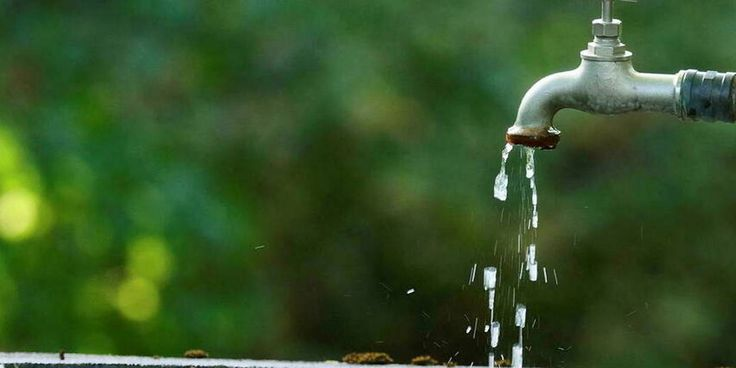

Entenda como a água é gerenciada nas áreas urbanas e as soluções para um abastecimento eficiente.
A gestão da água nas cidades envolve garantir o abastecimento, tratamento e distribuição eficientes de água potável, além do tratamento de esgoto e reuso de águas residuais. Também abrange a gestão das águas pluviais, como drenagem urbana e soluções sustentáveis. O uso responsável da água e a implementação de tecnologias de monitoramento ajudam a reduzir desperdícios. Desafios como o crescimento populacional e a poluição exigem soluções como a modernização da infraestrutura e o incentivo ao consumo consciente para garantir a sustentabilidade hídrica.
Os desafios do abastecimento urbano de água são complexos e diversos, devido ao crescimento populacional, mudanças climáticas, poluição e a pressão sobre os recursos hídricos. Aqui estão os principais desafios enfrentados pelas cidades no fornecimento de água potável: